git安装教程
下载与安装
1.下载Git
官方地址为：https://git-scm.com/download/win
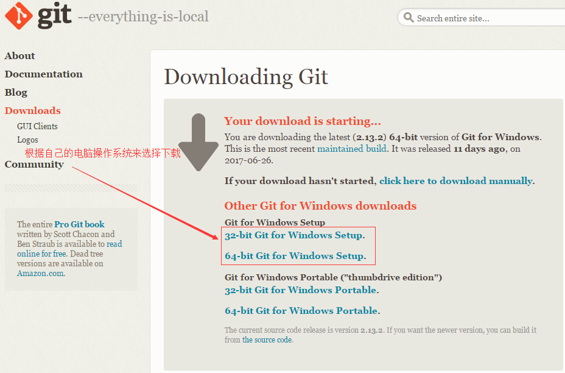2.下载完之后，双击安装
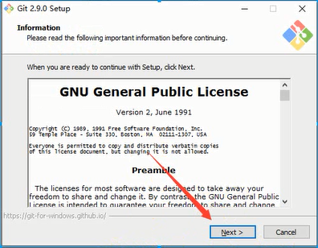3.选择安装目录
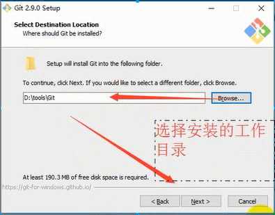4.选择组件
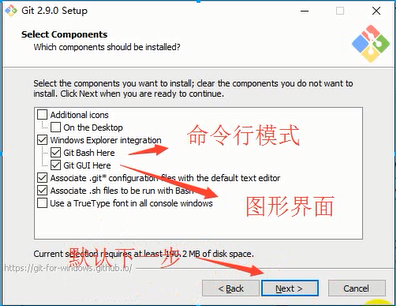5.开始菜单目录名设置
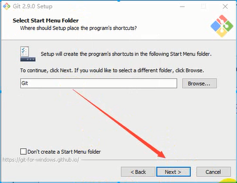6.选择使用命令行环境
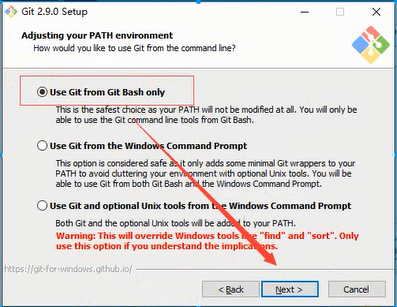7.以下三步默认，直接点击下一步
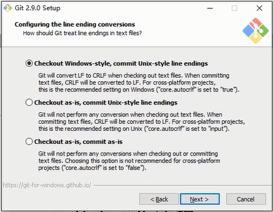
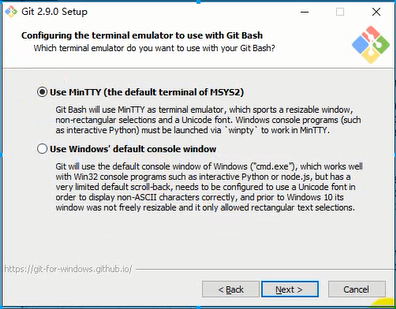
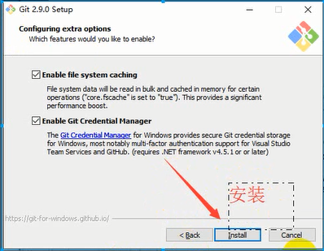8.安装完成
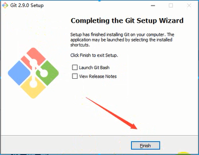9.检验是否安装成功
回到电脑桌面，鼠标右击如果看到有两个git单词则安装成功
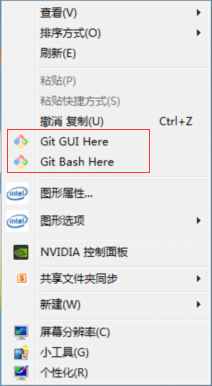
环境配置
1.git安装好去GitHub上注册一个账号，注册好后，点击桌面上的Git Bash快捷图标，我们要用账号进行环境配置啦
2.配置用户名和邮箱
1
2
3
4# 配置用户名
git config --global user.name "username" //（ "username"是自己的账户名，）
# 配置邮箱
git config --global user.email "username@email.com" //("username@email.com"注册账号时用的邮箱)以上命令执行结束后，可用以下命令查看配置是否OK
1
git config --global --list
3.生成ssh
继续刚才的操作，在命令框中输入以下命令，1
ssh-keygen -t rsa
然后连敲三次回车键，结束后去系统盘目录下（一般在 C:\Users\你的用户名.ssh）(mac: /Users/用户/.ssh）查看是否有。ssh文件夹生成，此文件夹中以下两个文件
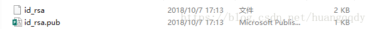4.将ssh文件夹中的公钥（id_rsa.pub）添加到GitHub管理平台中
title随便起一个，将公钥（ id_rsa.pub）文件中内容复制粘贴到key中，然后点击Ass SSH key就好啦
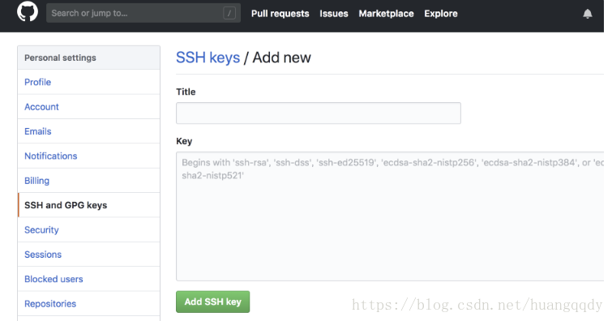5.测试一下配置是否成功，在Git Bush命令框（就是刚才配置账号和邮箱的命令框）中继续输入以下命令，回车
1
ssh -T git@github.com
要是看见下面的这句话就说明配置好啦
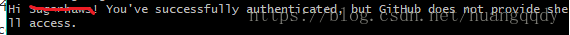
原文作者: 奇魂
原文链接: http://yoursite.com/安装教程/git安装/
版权声明: 转载请注明出处(必须保留作者署名及链接)